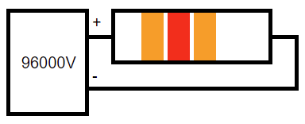

Looking Back, Looking Forward
With the advice from Waldo and his friends, the participants at the Olympic Games all do very well. However, it is a competition after all, and not everyone can win. What do you say to cheer up those who do not win as they had hoped?
Hit-Grass-Startle: A rash act that alerts the enemy
CC4->BB10->CC3->BB4 (2)

NINDURSTE
GBYGRETRVFN
GBYGRETRVFN
GBYGRETRVFN
GBYGRETRVFN
| R | E | |
| T | R | A |
| C | E | D |
| T | E | |
| R | R | A |
| C | E | D |
Second largest imp difference
(2,1) (4,5) (4,1) (7,1) (1,3) (7,2) Directions using room one
Middle of Sudoku grid
The bad vizier’s quixotic project idea was freaking many out
The missing letter on the space with only 1 missing letter
More common name of Death Behind (1)
19th in Matilda’s path
Last of 9 consecutive whites in the same row
Lady Gaga’s intersection
Middle of the cryptic grid
Letter after 14
Most common letter in row 30
The only one transformed again of the 6 directly indexed letters
Romesh Ranganathan painted a horse in red, blue and yellow
1 * waning crescent, 1 * x-axis, 1 * y-axis
First in the book series (2)
Spider-Man Homecoming
Yellow (2)
A (5)